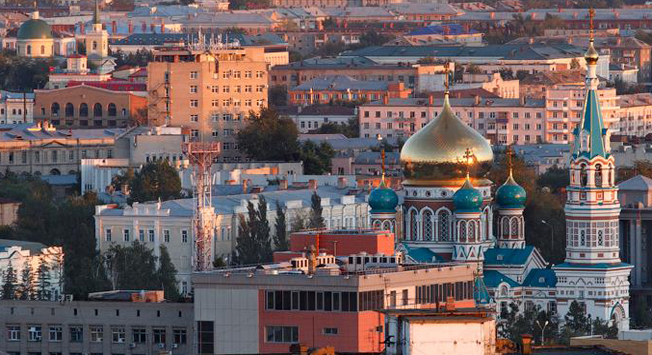
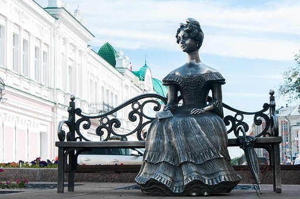
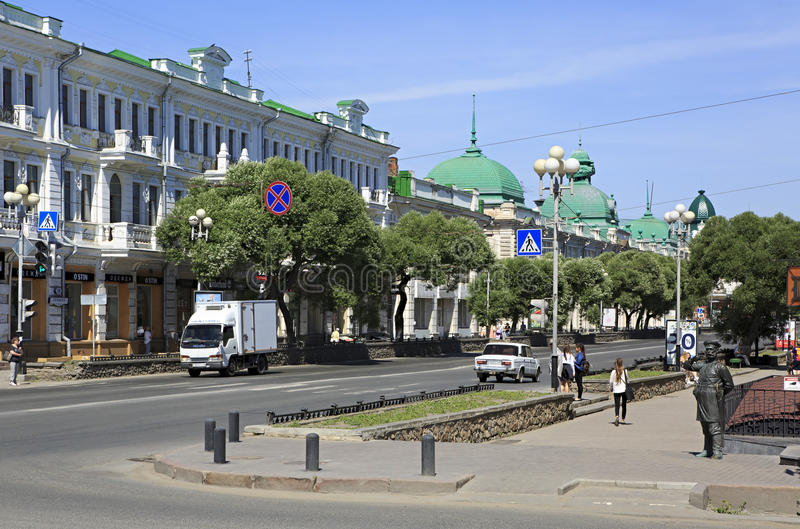

Omsk (/ɒmsk/; Russian: Омск, IPA: [omsk]) is the administrative center and largest city of Omsk Oblast, Russia. It is situated in southwestern Siberia, and has a population of over 1.1 million. Omsk is the third largest city in Siberia after Novosibirsk and Krasnoyarsk, and the twelfth-largest city in Russia.[13] It is an essential transport node, serving as a train station for the Trans-Siberian Railway and as a staging post for the Irtysh River.
During the Imperial era, Omsk was the seat of the Governor General of Western Siberia and, later, of the Governor General of the Steppes. For a brief period during the Russian Civil War in 1918–1920, it served as the capital of the anti-Bolshevik Russian State and held the imperial gold reserves. Omsk serves as the episcopal see of the bishop of Omsk and Tara, as well as the administrative seat of the Imam of Siberia. The mayor is Sergey Shelest.
  see also: History of Omsk
At the beginning of 1717, the dragoon captain Ilya Gavrilovich Aksakov was invited from Russia. The Governor confers a major on him and directs him to supervise the construction of a new (second) fortress at the mouth of the Om. In the summer of the same year, the Omsk garrison under the command of Stupin went to the upper Irtysh to build fortresses. Lieutenant Colonel Ivan Buholz categorically refused to lead a new expedition and in March 1717 was sent from Tobolsk to the capital. There is very little information about the foundation of the Omsk settlement and the construction of the second fortress. One of the most valuable sources of information is the inventory of documents of the Tara Chancellery, copied for Professor G.F. Miller in 1734. This inventory was mentioned by Professor V.I. Kochedamov [ru] in 1960, and in 2015 it was published by the Barnaul scientists V.B. Borodaev and A.V. Kontev.[19] However, there are no drawings and, accordingly, it is not known where and how the new city (fortress) should be built. From Tara to the Omsk fortress, a drawing was sent "On the structure of the Omsk fortress beyond the Omya river prison and courtyards in a line." In 1722 this drawing was used by the captain-engineer Paul de Grange in the development of the plan of the fortress on the right bank of the Om. At the end of the summer of 1717, Gagarin ordered the production of six bells for the Yamyshevskaya and Omsk fortresses. Bells were made by the military department and in an amount of three pieces per fortress.